Olympic + Paralympic Discovery Platform — Team USA · Research: 2026-05-03
TL;DR — The clearest adjacent pattern is the clickable US state map → region-specific content card flow (onx-offroad, FOLX Health) combined with the digital sports collectible program model (MLS Quest). Critical insight: treat the map as an emotional "unlock screen," not a data table, and the card flip as the reward moment. The holographic shine is table stakes — simeydotme's Pokemon Cards CSS is the engineering reference to fork.
Recommendations / Next Steps
1. Design the map as an "unlock screen," not a data visualization
State hover = a rising card preview with athlete thumbnail + medal count. Clicked states visually "open" via scale + glow pulse. Apply a discovered/undiscovered visual distinction from the start.
2. Make the card flip the central interaction — front sells, back informs
Front: full-bleed athlete photo, state name, medal type. Back: stats grid with Olympic vs Paralympic at equal visual weight, CTA to mini-game or "Explore State."
FRONT BACK
┌──────────────┐ ┌──────────────┐
│ ░░░░░░░░░░░░ │ │ CALIFORNIA │
│ ░ATHLETE░░░░ │ ──flip──> │ ───────────│
│ ░PHOTO░░░░░░ │ │ 🏅 Olympic │
│ │ │ Athletes: 47│
│ CALIFORNIA │ │ 🏅 Para │
│ ─────────── │ │ Athletes: 31│
│ ⭐ GOLD ×3 │ │ Gold Silv │
└──────────────┘ │ ─────────── │
│ [PLAY GAME →]│
└──────────────┘
3. Implement holographic shine as core card identity
Use mousemove to track cursor → drive CSS custom properties --mx / --my → apply as radial gradient overlay with mix-blend-mode: color-dodge. Fork simeydotme's Pokemon Cards CSS.
4. Keep the map ↔ collection toggle in the primary nav
Top center, like a segmented control. Persistent across both views. Don't make users hunt for it — if it takes more than 3 seconds to find, it doesn't exist.
5. Encode Paralympic parity in the component, not just in copy
Two equal columns on the card back — same font size, same visual weight. No footnotes, no secondary tabs. The design system enforces the editorial mission.
🟡 OLYMPIC
47
Athletes
12 medals
♿ PARALYMPIC
31
Athletes
8 medals
Key Examples
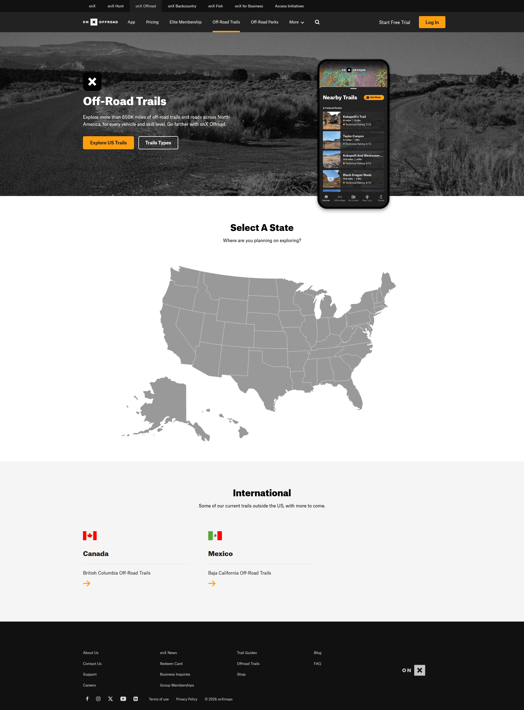
onX Offroad — US state map as entry point Lazyweb
Interactive US map where users select a state to discover region-specific trails. Closest structural analog to the Team USA state exploration flow — "explore → select state → get content."
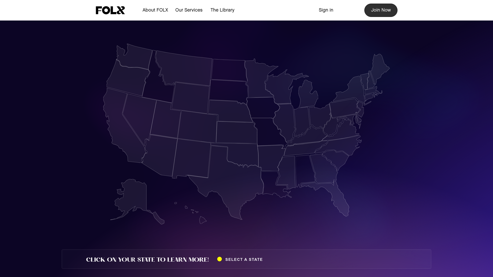
FOLX Health — Clickable US state map Lazyweb
US map outline in purple, users click a state to reveal location-specific services. Proves the "click state → get data" pattern works outside navigation apps — minimal ornamentation lets the states themselves carry meaning.
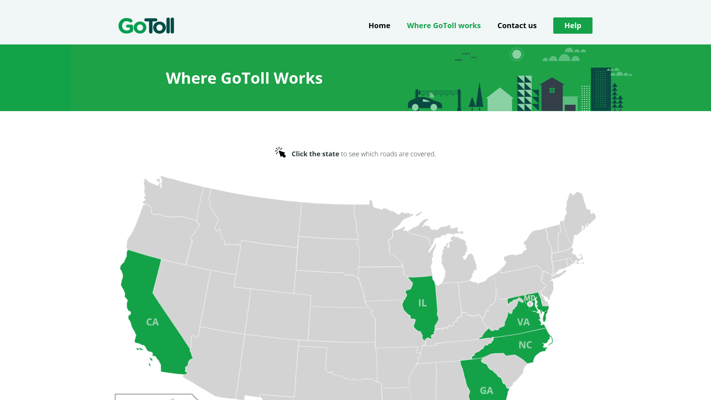
GoToll — Highlighted US state map Lazyweb
Coverage map with highlighted states in green. The visual "unlocked vs locked" pattern maps directly onto "states you've collected" vs "states still to explore." Uses color fill as the primary data encoding.
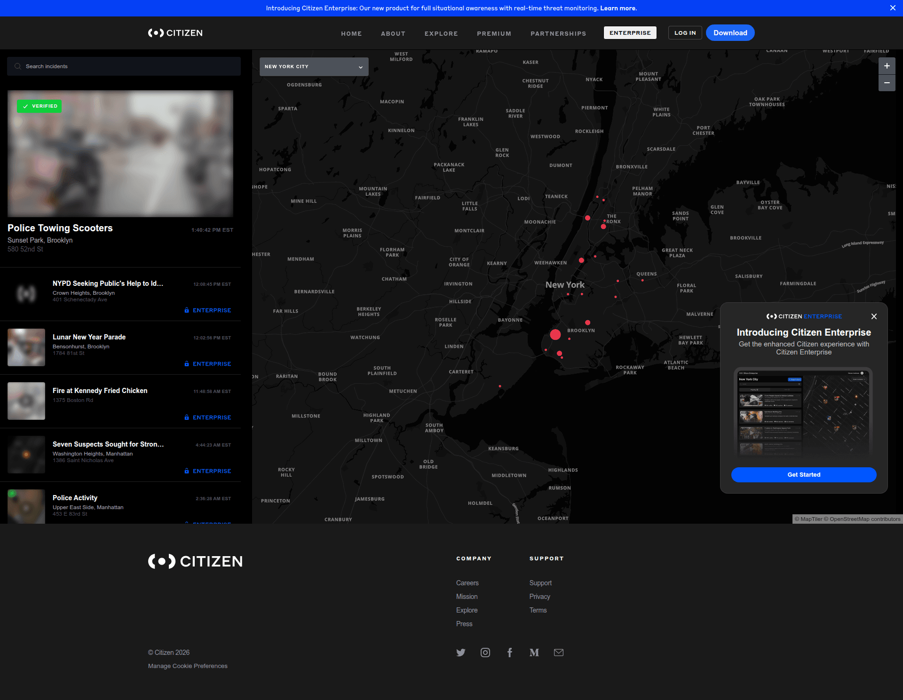
Citizen — Map + sidebar card feed Lazyweb
Full-screen interactive map with a persistent left sidebar showing a feed of cards. Reference for a split-view layout where map and collection are co-present simultaneously rather than toggled.
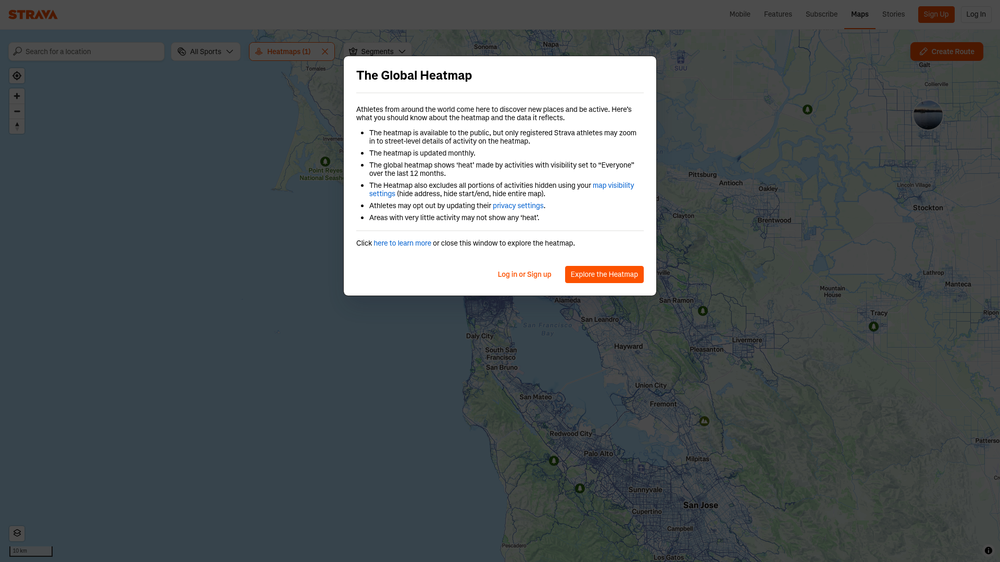
Strava — Map with centered modal popup Lazyweb
Global Heatmap with an explanatory modal and primary CTA. Shows how a map with a first-time explanation overlay can work without being condescending — the map is still visible behind the modal.
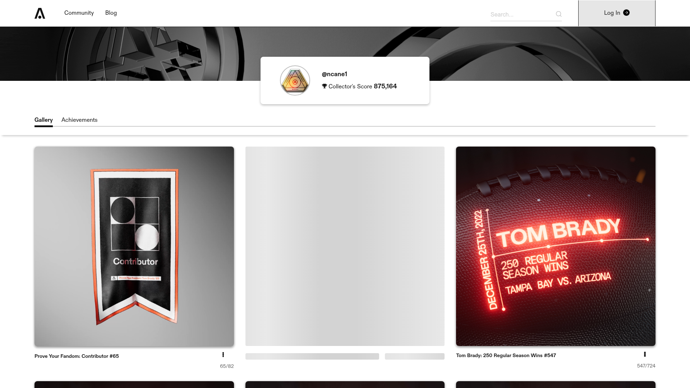
Autograph — Celebrity collectibles drops gallery Lazyweb
Tom Brady's platform showing collected drops as a three-card grid — neon-styled celebrity cards plus empty placeholder slots. Empty slots create urgency to complete the set. Direct competitor pattern for the Collection view.
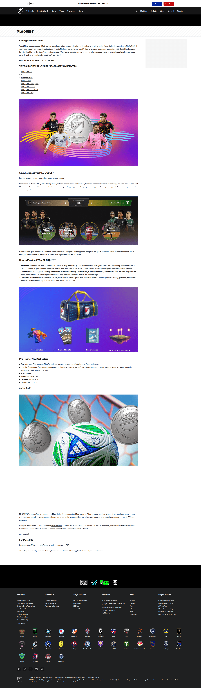
MLS Quest — Sports digital collectibles program Lazyweb
The most direct competitor concept — collect match icons, complete challenges, earn real rewards. Key design learning: they deliberately downplayed blockchain/NFT framing to avoid alienating casual fans.
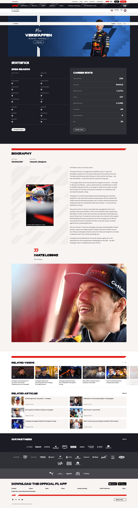
Formula 1 — Athlete profile with hero + stats Lazyweb
Driver profile: large athlete hero, team context, season stats, career totals. This is the card-back information architecture in its expanded form: identity → current season → career → CTA.
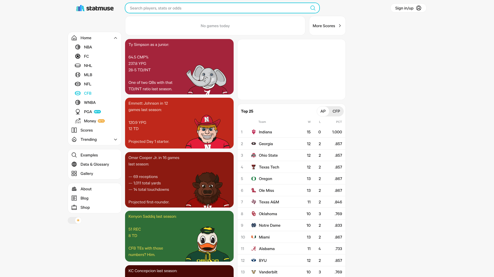
StatMuse — Stats + colorful team card grid Lazyweb
Sports stats dashboard where teams are colorful avatar cards in a browseable grid. Shows how to make a data-dense collection visually engaging — each card carries color identity from the team brand.
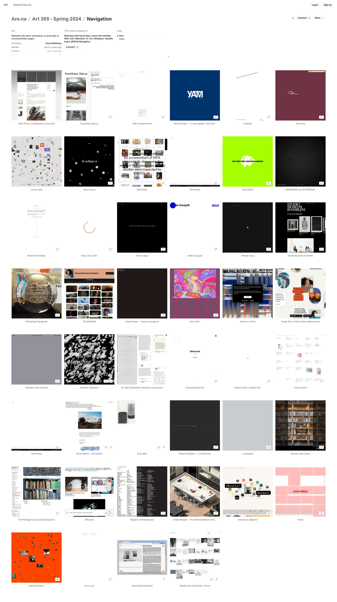
Are.na — Grid/table view toggle in header Lazyweb
Minimal, well-placed view toggle that doesn't interrupt primary content. Shows where the map ↔ collection toggle should live — persistent in the header, not buried in a settings menu.
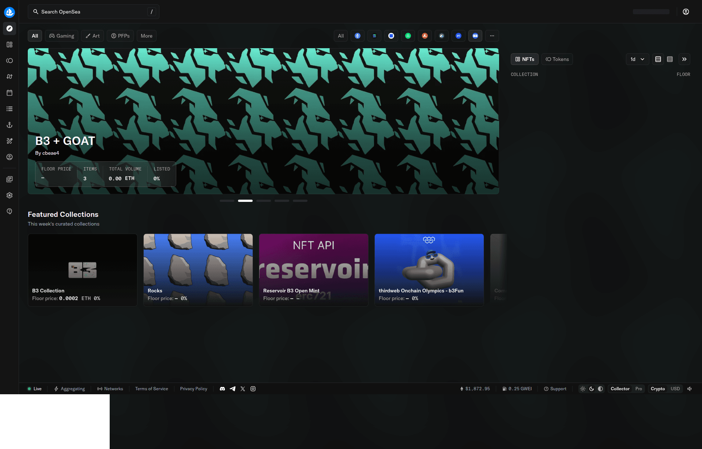
OpenSea — Collection grid/list with toggle Lazyweb
Most complete reference for browsing a large collection with grid/list toggle, hero banner, and filters. The NFT collecting pattern translates well to the sports card collecting model.
Patterns
Strong examples in this design space share these properties:
Map as emotional entry point
onx-offroad, FOLX Health, GoToll all use the map to make users feel like explorers. The visual language is "choose your adventure," not "filter by region."
Empty slots as progress motivators
Autograph's placeholder cards create a "complete the set" impulse. The gap is the hook — show what's missing, not just what's owned.
Toggle lives in the top bar
Are.na, OpenSea — the grid/list/map toggle is always in the persistent header. Users who want the other view shouldn't have to search for it.
Card flip as reveal, not navigation
The best flip interactions feel like unwrapping. Front is the hook, back is the payoff. Don't repeat the same content on both sides.
Hover triggers physical card metaphor
Tilt + shine tracks the mouse in real time. This is what distinguishes a "card" from a "tile" — the physical metaphor of picking up a real card.
Friction-free first engagement
MLS Quest avoided wallet requirements. No account required to explore — account required only to save progress. Lower the barrier to first engagement.
Anti-Patterns
All 50 states at equal visual weight
Without discovered/undiscovered distinction, the map looks like a geography lesson. Apply the "lit vs unlit" treatment from the start.
Card flip as the only path to stats
Some users won't figure out the flip. Always provide a fallback — hover preview or an accessible "expand" button.
Paralympic data as supplementary
Putting it in a small tab or footnote sends the wrong signal. Equal prominence must be enforced in the component, not just in copy guidelines.
Map tooltips instead of card previews
Text tooltips feel cold for a discovery platform. Show the card itself rising from the state on hover.
Grid/list toggle hidden in settings
Buried toggles break discoverability. If users can't see both views within 3 seconds, the toggle might as well not exist.
Holographic effect playing on page load
Always-animating shimmer loses its magic. Trigger it only on mouse hover — the moment the card "wakes up" is the reward.
Unique Angles
MLS Quest's "Key Play Medallion" — video inside the card
Each medallion in MLS Quest plays a video clip when opened, not just static art. For Common Ground: when a card flips, play a 5-second highlight reel of the athlete's most iconic moment. This transforms the card from a data display into an emotional memory.
GoToll's coverage fill → medal density choropleth
GoToll uses color fill to show "covered/not covered" states. For Common Ground: show medal density per state as the default map fill (darker = more medals). The data story is visible from first load, before any click.
Strava's ambient heatmap as default state
The heatmap shows aggregate data without requiring a click. Common Ground could display a "medal heatmap" across states as the default map view, with hover/click drilling into the specific state card.
simeydotme's Pokemon Cards CSS — the engineering shortcut
The only open-source project that fully recreates the physical holographic trading card experience in CSS (foil, shine, 3D tilt, sparkle). Designed for Pokemon, but fully transferable. This is the implementation shortcut for the entire holographic card microinteraction. github.com/simeydotme/pokemon-cards-css
Findings
The map-to-card pattern exists in fragments, not in totality. No single product combines (a) clickable US state map + (b) collectible card flip + (c) holographic microinteraction + (d) collection view. MLS Quest is the closest concept match; onx-offroad is the closest map UX match. Common Ground combines them for the first time.
The collectible card format is having a moment in sports digital products. MLS Quest (2024), Autograph, NBA Top Shot — the market is validating that sports fans engage with collectible digital cards. Common Ground benefits from this cultural moment ahead of LA28.
Paralympic parity is a genuine design gap. No product in the research corpus handles "two equally important data types within a single card" well. This is both a challenge and a differentiator — design the parity well and it becomes a hallmark of the product.
The holographic shine is technically straightforward. The simeydotme Pokemon Cards CSS project is the best reference implementation — mousemove → CSS custom properties → radial-gradient overlay with mix-blend-mode: color-dodge. A React port exists via Skia (Jerin John K., Medium).
The LA28 data opportunity is real and near. Snowflake announced a three-year partnership as Official Data Collaboration Provider for LA28 and Team USA (May 2025). Rich athlete data will be available. Building the map interaction now, with placeholder data, positions Common Ground well for 2028.